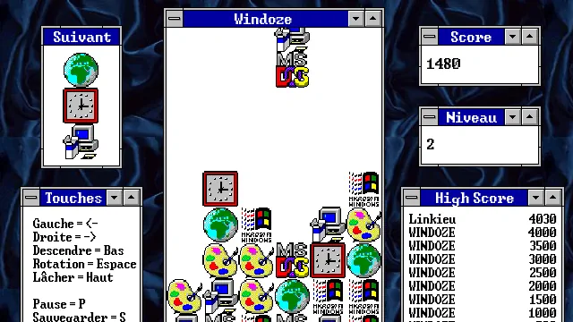

Columns édition Windows
Columns Windows

Terminé
Langue :

Début du projet :
30/06/2022
Fin du projet :
10/08/2022
Langages
R Python
Equipe
Matthieu FARANDJIS
Plus sur le projet
Présentation
"Windoze" est un jeu MS-DOS créé par Loren Blaney en 1994.
Ce jeu est fondé sur "Columns" créer par Jay Geertsen en 1989 et commercialisé par SEGA.
Il reprend la même mécanique de jeu, mais il a comme thème Microsoft Windows 3.1.
J'ai découvert le jeu par le biais du compte twitter de foone, il me semble.
Le jeu m'a intéressé, et au lieu de lancer une machine virtuelle pour l'installer, j'ai décidé de le recréer en Python.
Après tout, j'avais déjà refait Tetris en NSI, alors pourquoi pas tenter aussi Columns !
Mode d'emploi
Règles
Le but est de réarranger et de placer les pièces de manière à faire apparaître des lignes verticales,
horizontales ou diagonales de 3 blocs (ou plus) de même couleur,
ce qui a pour effet de faire disparaître ces blocs.
Source (Wikipédia: Columns): https://fr.wikipedia.org/wiki/Columns_(jeu_vidéo)
Touches
Gauche : ←
Droite : →
Bas : ↓
Rotation : Espace
Lâcher : ↑
Pause : P
Sauvegarder : S
Quitter : Echap
Lancer le projet
Modules utilisés :
Pygame
Random
Time
Json
Pour lancer le projet, importez puis exécutez le fichier Windoze.py.
Le projet a été créé avec l'IDE Spyder (Ananconda).
Si vous n'avez pas de programme pour lancer le projet Python, vous pouvez installer l'IDE EduPython.
Je recommande EduPython si vous souhaitez tester le projet sans vous embêter avec l'installation des modules ou de Python.
Sur EduPython:
Importer : Fichier > Ouvrir > jeu_eleves.py
Lancer le jeu : Exécuter > Exécuter (Ctrl + F9)
Arrêter le jeu : Exécuter > Stopper le debuggage (Ctrl + Alt + F9)
Les modules sont déjà présents au sein d'EduPython.
Sources
Vidéo sur le projet original : https://www.youtube.com/watch?v=oT92MVBPMAY
Site officiel du créateur d'origine : http://www.xpl0.org/